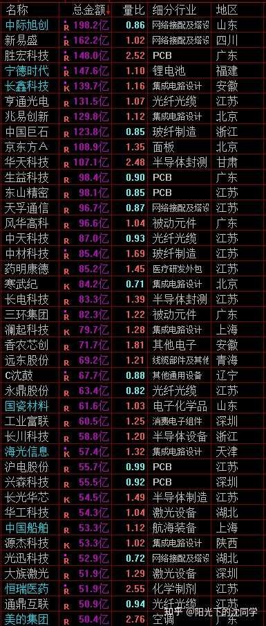
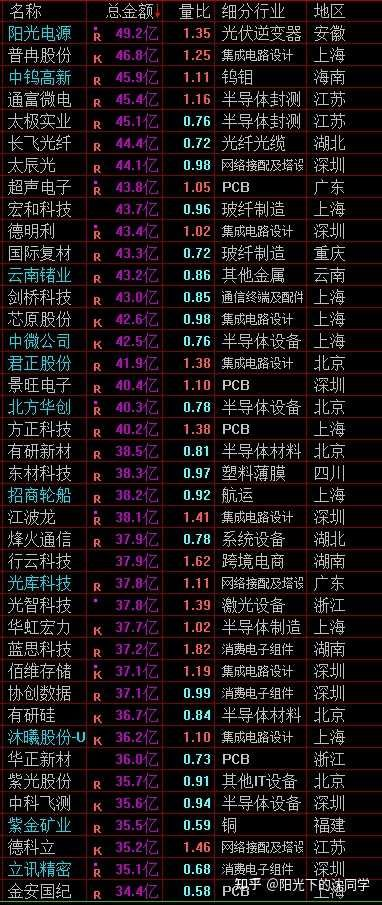
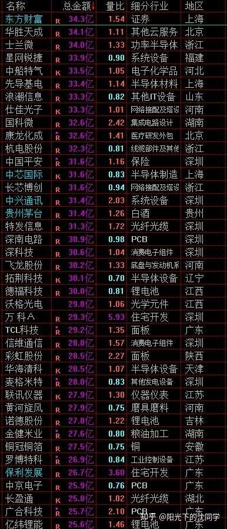

每天分享一些最新的行业调研资料，聊聊投资心得，喜欢的朋友可以收藏起来，慢慢学习
内容不涉及指数预测，和具体买卖判断，不聊具体代码
这个必须通知一下大家，各大平台都有最新的要求，尤其是粉丝量大的up，内容都不能写以上这些内容，不然会很麻烦
一开始我考虑的是要不就停止每天更新，每周写一个调研内容也不错
但这样每天喜欢阅读的朋友，可能会觉得少了一个学习渠道，会不习惯
所以想了想还是每天维持更新，但不合规的内容肯定不能涉及，内容也会自动消失，那么在内容合规的情况下，多聊聊调研情况，投资心得，在不涉及不能聊的东西情况下，每天尽可能分享分享，这是目前唯一可以做的
上面这些情况都说的非常清楚了，希望大家理解，确实没办法，各大平台都一样，任何平台都有这些要求，金融，投资领域未来就是会越来越严格的
现在开始今天的分享，祝2026年9月22日看见的朋友，多多赚钱，投资顺利！
1，
今年8月，全社会用电量用电量再破万亿，达到10332亿千瓦时，同比增长1.7%
用电负荷创历史新高达到15.6亿千瓦
高技术及装备制造业用电量保持较快增长势头，达到1222亿千瓦时，同比增长7.2%
计算机通信设备7.5%
汽车制造业7.6%
通用设备制造业7.6%
专用设备制造业8.2%
电气机械12.3%
1—8月，全社会用电量累计71730亿千瓦时，同比增长4.3%
科技发展离不开电力，各种电力设备，核心电力零部件，包括AI方面的电源，固态变压器，液冷，这些都是很好的行业，值得长期关注的
2，
最近海外很多利好扶持，叠加国内也越来越重视，AI制药，AI医疗热点不断攀升，值得重视
而且美国正在草拟针对生物技术对华投资的新规则，允许美国药厂投资中国企业开发的潜力新药，比过去有放松，这个是利好
而且创新药方面也在加速
2026年上半年对外授权约81笔，潜在总金额约1100亿美元，肿瘤ADC、双抗等主流管线已成为中美药企合作的核心
政策上面明确提出，到2030年规模以上医药工业企业营收超3.5万亿元，创新药产业规模增速年均达到20%以上，首创新药FIC占全球比例达到25%以上
AI制药的产业化进程也在提速
这些方面龙头企业发展潜力巨大
3，
AI各种细分领域依旧火爆
比如说MLCC现货从5月底开始发酵，6月起进入一天一价、甚至一小时一价的状态，部分热门型号一个月涨幅达7-8倍，现货最高被炒到原价的2-10倍
海外龙头日本村田、太阳诱电、韩国三星电机相继发布涨价函，AI服务器所用高容量MLCC原厂涨幅普遍在15%-35%
大厂把消费级产能转向AI高端产品，渠道商担心常规物料收紧
预计明年约60%的MLCC收入由长期协议覆盖
AI数据中心MLCC市场今年可能增长70%-80%，公司自身AI订单收入同比增长约100%，两年后AI在其MLCC收入中的占比可能达到40%
关注各种核心的AI细分领域，这些未来还有关注价值
4，
房地产行业利好最近1个月非常多
之前推出了一系列现房销售，包括延长贷款，等等政策
新修订的《住房公积金管理条例》正式施行，公积金制度从侧重支持购房，正式转向覆盖购、租、修、养的住房全周期保障
二手房交易占比从2020年的27%一路攀升至2025年的46%，而今年前8个月已经达到52%，首次突破50%的分水岭
现在消费者买房的主战场正在从新房售楼处转向二手房中介门店
今年1至8月全国二手房网签面积同比增长10.6%，交易规模历史性地反超新房
9月前十天，50城新房成交同比持平，其中一线城市同比大增27%
77城二手房实时认购套数连续两周环比上涨，周同比增幅达到23%
二手房市场的流动性好转，正在加速存量房流转、缓解新房库存压力
而且最新调研到的情况来看，受销售模式改革影响，自2027年3月起将出现为期12至18个月的显著供应短缺，其后约两年逐步企稳
开发商需要重构商业模式以适应现金流周期拉长的新常态，行业格局加速分化，中端国企及强区域性本土房企将成为最大受益者
活下来的房企，未来的市场份额和利润率可能比过去更好
这些情况刺激了很多可以活下来的核心房地产龙头企业估值回暖，有资金在博弈这方面的利好，抓住这个周期，做一波行情，这方面也是值得研究的
---
每天原创不易，而且现在限制非常多，坚持更新越来越难，读者朋友千万不要忘记点赞支持一下
正所谓先赞后看，腰缠万贯
大家可以先点一波赞，我们再继续慢慢聊
祝点赞的朋友福寿无量，天天开心
继续聊
对于科技方向来看，高估值品种，高位泡沫大的品种，依旧难做
因为加息周期开启，超跌反弹以后依旧困难
只有极少数方向会压力小一点，细分领域，未来业绩超预期情况好一点，比如说CPU，光模块、电子布、MLCC、存储，液冷，电源，固态变压器这些
AI算力投入目前没有放缓，但市场对前沿模型厂商业化空间的预期在调整
从供需层面看，缺算力这个事实目前仍然成立，国产算力产业链还是有关注价值的，CPU，算力龙头还是景气度很好，CPU方面其实也很值得深挖的
包括各种网络安全的龙头企业最近现金流也在改善，这方面也值得研究
未来美联储应该还有1-2次加息，所以要谨慎交易，不要忘记投资风险，严控投资总仓位
在行情给到机会的时候，一些之前可能投资错误的品种，可以控制控制仓位
投资方面止损非常非常重要，尤其是行情表现还不错的时候，来做仓位优化，来做止损，是非常聪明的选择
不能每次反弹的时候就认为行情好了，舍不得做各种仓位优化，跌下来又后悔自己仓位太高，这样就变成了死循环

可以聊的内容非常有限，大家有任何投资疑问，有什么想交流的都可以在知乎首页咨询，想单纯支持一下也可以
【在知乎上我的主页咨询即可，没有任何群，不搞私下小圈子】
家庭资产长期稳健配置方案分享，仓位优化，估值分析，行业分析，心态调整，各种投资学习技巧都可以咨询
大家的支持和尊重是我创作的最大动力
感恩大家每天的咨询，感谢大家对知识的尊重，感谢大家对我的支持
欢迎咨询
行情闲聊
资金面一般般，没有什么主线行情的情况下可以多关注细分领域机会，严控仓位，保护好胜利果实，不要在拉升的时候加仓，反而要控制好持仓
我自己肯定不会追高，随着上涨不断降低仓位，增加现金流是必然的，也会有了调整机会再重新找机会，当然也不会轻易重仓
现在不能涉及很直接的点位判断，方向判断，具体交易方向这些，所以聊起来非常费劲
未来我需要考虑怎么来表达
就比如说过去分享的具体仓位，持仓各种板块比例，现在明确不允许有的，那么我目前是考虑用投资难度来代替我的想法，和大家可以看懂仓位的控制方向
不能明确聊这些，但行情难做，极难，不容易赚钱，这些肯定是表示仓位低，没有加仓
如果以后有机会，我会用有机会，胜率在提升这些形容词的改变来说明我有加仓什么的，这个是挺好的想法
但是因为不能聊点位买卖，和方向判断，那么未来只能说筹码分布区间估值情况，来替代
比如说目前筹码分布情况3950-3650区间，估值中规中矩
未来筹码分布到了3600-3000估值比较低，只能这样来形容
不能说买卖，或者认为会上涨或者下跌，这些是不行的，所以大家要认真看以后的分享，关注形容词的变化，认真看，肯定可以看出来不一样的地方，可以看出来蛛丝马迹的
聪明的读者朋友，只要细心阅读我的分享，肯定可以理解我的判断和想法，真的有机会，或者有风险，我的用词肯定是不一样的
目前来看黄金估值还可以，如果大幅调整会有价值
美股在高位震荡，暂时没有什么价值
红利分化严重，低位的可以研究研究
债券目前估值合理，可以研究研究
每天这些很适合新手，上班族投资者关注的品种，肯定会每天聊聊，但肯定是不能聊“定投”“具体会上涨，下跌，或者买卖”这些词汇，字眼肯定是不能涉及到的
大家自己平时多去研究这些资产，多研究习惯ETF，长期慢慢了解，合理配置，肯定是比其他乱七八糟个股，资产更好的，这些资产或者其他指数基金有比较大机会的时候，我肯定也会比较隐晦提到，用估值低估，值得关注，值得研究这些来表示，反正大家认真看，肯定可以看懂，就是未来的内容必须规范，不然就很危险，很麻烦
大家每天认真看，认真去学习，是肯定能看懂意思的
港股方面最近多只港股通ETF成交明显放量，很可能有保险资金或其他大资金在提前布局
因为近期部分保险机构已收到相关细则通知，可以开始买入纳入互联互通机制的港股通ETF，后续各大保险机构可能都会跟进
那么在12月前后，核心的很多港股资产是有不少关注价值的
我个人不管什么市场，只要核心资产有低估值机会，我个人都会关注，不对美股，A股，港股有太多偏见去看待，有机会都一样的，控制好仓位即可
目前行情估值不低，不太好做，所以上涨不会加仓，会比较谨慎，等未来关注的各种资产估值下降，出现安全买点再重新加仓
投资不管投资什么，说白了都是在判断周期，判断趋势，判断估值，控制仓位
任何资产都一样，只不过大类资产更好把控一点，一些很细分的资产很难做，波动大
就像炒鞋子，一些很小众的玩具，都有人玩，但这种东西肯定很难，不是什么值得去聊的东西，但不能否认这些小市场很多人也专门在做
对比起来黄金，股票，房子，汇率差价，债券，各种ETF指数，就更普惠，更值得大家去研究
这些资产长期也都有波动，有周期，有规律，有火爆的时候，也有冷的时候
舆论来看，肯定都一样，上涨的时候大家看好的时候，都是吹捧的，下跌的时候都不看好，但实际上都是周期
不管你喜欢关注什么方向，平时多研究，多留现金，在比较冷的时候，估值低的时候去关注，而不是舆论发酵好的时候关注
因为人多的地方真的没有好事
网红店很多都不好吃，没有特色，还人挤人
人头攒动的地方其实都没有什么价值的，这些大家肯定也明白
要看见一个东西的价值，在大部分人不怎么关注的时候，你要多关注，各行各业，各种资产，各种好公司，都适用于这些逻辑
不要在他们表现不太好的时候，市场上都喷，你也跟着喷，应该多看看机会，估值下来了，大家反而觉得这些资产不太好了，其实机会才真的出现
这个是投资的根本，是比任何代码分享，都重要的经验
我自己很多低成本的底仓，买到的资产，都是在行情很弱，企业遇见了一些经营困难，大家不看好的时候我开始慢慢配置的，回过头来看，因为这些困难带来的廉价筹码机会，才让我可以长期持有成本低，可以熬得住很多调整
尤其是一些大方向很好的行业，很有前途的企业，更加要懂得把握他们行情不好，经营短期出现困难的机会，回过头来看，是很好的机会，控制控制好买入节奏和仓位即可
这个是很重要的投资经验
因为其实短期行情上涨下跌，也确实没有人知道，短期波动不重要，越是天天盯着短期波动，越是做不好行情，越是错过很多长期机会
低位的很多好资产，舆论都是差的，走势都是不好看的，你要去在意这些，你肯定拿不住，也肯定做不好
但你错过了这些低位筹码，优质低位资产的配置机会，你怎么后面更好的赚钱？
高位的品种肯定是利好更多的，但估值贵了，最终还是下跌空间更大的
大家要相信这些周期，相信估值的轮回，相信高低切的投资底层逻辑，投资就会简单很多
去深度调研行业和企业，只要选的方向没有问题，仓位控制好一点，投资自然会轻松
不要做自己不懂的方向，用ETF来替代很多个股的投资，用仓位控制来减少风险
平时把基本功补齐，各种方方面面好书多看看，基本功都不会，你肯定也没办法去做这些筛选，基本功是必须去学的，不然你看再多人分析，看再多内容，都是人云亦云，你没有基础，你就没办法判断你得到的各种信息对错
其实很多投资者归根结底还是经验不够，基本功不太好，所以一直不知道自己应该做什么，怎么去估值，怎么去交易
大家可以认真想一想，是不是这样？
基本功就是消息面，基本面，技术面，资金面的各种分析方法，思路，就是读懂财务报表，就是各种行业的运行情况，各种资产的估值方法，各种行情走势的规律，这些都是基本功，都是大家可以通过看书来完善的，这一步真的不能少
后面放假，大家有时间真的认真看看，相信我，你基本功学扎实了，你再去看各种分享，你就突然可以融会贯通，突然可以看懂了，一下子就有了很多思路，会完全不一样
99%的投资问题，归根结底都是仓位控制问题和基本功问题，没有那么多其他问题
但就是很多人不能多花点时间，平时多看看书，或者仓位就是不控制好，导致投资一直做不好
大家把这两个问题解决了，投资就会没有那么难
未来很多内容大家都不能聊，大家更加要自己认真学习，认真控制好仓位，网上可以聊的这些内容会越来越少，要好好珍惜



---风险提示：股市有风险，入市须谨慎
今天是坚持写复盘笔记的第1528天【每日打卡】
下面是我自己多年来的一些重要的心得感悟，分享给大家，会不定期增加内容
1，
长期投资成功的关键是稳定的情绪和沉稳的性格，这些比过人的天赋更重要
2，
最终我们穷其一生获得的一切经验、知识和所有财富都需要转化为自身的品德修养，不然获得越多失去越多
自身的修养是留住各种财富最好的容器，富裕一时不难，富裕一生不易
珍惜获得的一切，保持初心、慈善、知足，让自己的德行和财富共同成长，才能方得始终
3，
古之成大事者，不惟有超世之才，亦必有坚忍不拔之志
想成为优秀的投资者一定要持之以恒，不断学习，反思，总结，在投资中获得的各种经验最终都会成为你财务自由的砖瓦
4，
再高的智商也一样会被情绪一瞬间冲垮
大部分的亏损都来源于投资者的冲动和情绪化交易，学会控制自己的情绪和心态才能长期稳定的复利
5，
富在术数，不在劳身
一定要多思考，任何时候想清楚了再交易，漫无目的的交易，只会多做多错
6，
利在势居，不在力耕
投资赚钱主要靠把握时机，没有机会就休息，多留现金
做可以让自己心安的投资，便是对于你来说最好的盈利模式
7，
谨记：贪念起，万念俱灰！
控制住了风险，利润会随之而来
富贵险中求，也在险中丢
求时十之一，丢时十之九
祝大家在如梦如幻的行情里清醒而自由
每天和读者朋友声明一遍：
每日复盘内容不涉及具体仓位，持仓，代码，买卖，点位，趋势判断这些内容
只能以科普，经验分享为主，限制越来越多，希望大家见谅
可以聊的内容，会尽可能的聊，前提是合规，符合要求的分享
有任何疑问，不清楚的，都可以在知乎首页上咨询，什么都可以问，知无不言
当前投资难度：极高，交易胜率不高，整体机会不如细分领域机会
投资者应该谨慎，控制好仓位，多留现金，不要冲动交易
多关注低估值，低位科技，低位白马蓝筹，不要追涨杀跌，不要乱追高
{kind=link}
{kind=link}
感谢老沈今天的各种干货分享，已收藏，内容很不错
其实不聊代码，指数，这些内容认为长期帮助更大，我个人很喜欢学习
金融行业确实如果都天天聊代码，行情，指数猜来猜去也会乌烟瘴气，还不如聊一些心得，调研内容，投资经验
我反正更喜欢看这些，也非常理解老沈的不容易，感谢老沈在这样的情况下还坚持每天更新，反正老沈写什么，我就看什么，我都支持
有不懂的，不能聊的，我会多多咨询
老沈要实在每天更新没什么可以聊的，可以每周更新，反正大家都是来学习的，也不是来跟风交易的，只要长期有更新就好，不需要每天更新
其实我早就料到会有这么一天。所以我一直认为投资是一条孤独的路，中间有老沈帮忙带了一段路已经很幸运了，这条路终究只能自己走下去，自主可控非常重要。我差不多是23年开始看老沈，开始正经学投资。那时候啥也不懂，但是控制仓位几个字听进去了。那会也不会选股，就天天照抄老沈仓位，当年也盈利了。后面老沈从一日三餐变成一日一餐，后面又隔日发布，仓位没有那么及时了。我就在想我自己要怎么控制仓位，想了几个月有点思路了。又恰逢老沈外出调研十几天，停更了一段时间。我拿自己的仓位控制系统实战了一下，发现运行的不错，老沈回来后，我一看，控制仓位的大体思路是对的。在后面牛市吸取教训又调了一遍，然后就差不多延续至今了。
投资组合这个东西我是这么想的。标普500ETF、纳斯达克ETF、黄金ETF、优质红利个股或者ETF这几个是很有必要配置的，这几个是长线优质资产，是你仓位的压舱石，大部分新手和老手都跑不过这些资产的收益。然后就是些灵活仓位，港股、A股、宽基ETF、行业ETF都可以做，但是不要太集中一个方向，适当分担一些风险。如果你有哪些品种几年下来的实战收益率比几个长线优质资产好，那说明自己做的顺手，可以适当加大仓位。如果跑不过，那大仓位还是要在长线资产。永远留一部分现金，放在国债逆回购或者中短债ETF就好，有机会了卖了买股票，没机会也有稳健收益。长债要判断加息降息周期，弄不明白的可以不做。
选股和买卖细节是我这几年下来还是做不好的。这种只能多学习，多积累，多实战，多咨询了。情况有变，那大家要如何应对呢？1、多看书，投资书籍里的投资思想是永不过时的，御股术也好，其他投资大师的经典书籍也好，都很值得看。2、多看大v们的过往文章、专栏，以前思想更自由更开放，一些投资思想永不过时，多考古。3、自己多思考，多实战，多积累，看的再多，不如自己想过，实战过，自己积累形成的投资体系好。4、多跟踪新闻、政策、热点，自己梳理产业链，有条件实地调研，没条件多收集资料，ai辅助。5、还是没想明白关键点可以咨询，但是自己要想好整理好，问的要有价值，尽量不要不知道问什么，或者太低级的东西。
虽然限制很多，还是希望老沈能每天聊聊。不局限于当前行情，聊聊调研心得、行业分析、投资小技巧都行，不聊投资心得也行，像以前的日记、投资者故事（送奶工和餐馆老板）、旅游分享、健身运动分享都挺有意思的。篇幅长短丰俭由人，但是看到特别关注阳光下的沈同学每天发布新的文章，点击去看已经成了习惯。
看了老沈两年的小白斗胆分享一下对老沈目前态度的猜测。长期资产方面，黄金估值还可以，手里现金流充沛的朋友可以每周定投，不要买的太频繁，保护好现金流，黄金仓位不那么低的可以等杀跌再慢慢定投；红利和美股今天已经明说了；债券依旧值的配置，是当下很好的类现金资产。短期方面，我认为老沈还没有清仓，应该是1-2%左右仓位，主要是前几天提到的低位方向新开的感受股性的仓位。因为目前我认为还是能找到不错的估值挺低的方向的，叠加创业板反弹力度还没有非常大，所以我认为老沈不会清仓。小白分享，请大家批评指正
明明已经很收敛了，现在还要再阉割一刀，我感觉其实就是沈同学最近预警熊市闹得。涨起来巴不得天天上热搜吸引人接盘，要跌了不准唱空让裁判先跑。这也不是个办法啊，以后除了付费咨询没有好的渠道了。
监管越来越严，能聊的东西越来越少，珍惜现在老沈在分享的内容。师傅领进门，修行在个人，最后还是得靠自己去面对市场，感恩老沈所分享的一切[感谢]